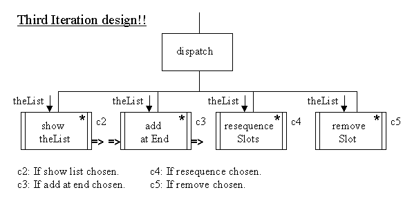
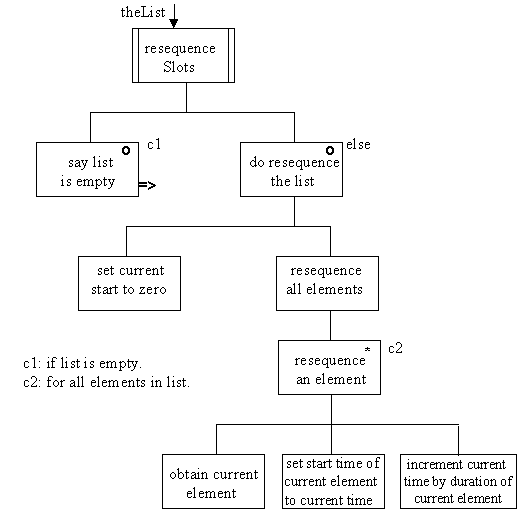
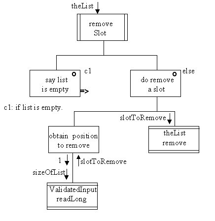

The dispatch option of the high level design will require the two addional options to be added.

The design of the resequenceSlots() method is as follows.

The top level of the design states that it will only resequence the list if it has any elements in it, otherwise it will inform the user that the list is empty. To resequence the list it sets the value of a local PlayTime variable called currentTime to zero and then iterates as many times as there are elements in the list. On each iteration the currentElement is obtained and its startTime attribute set to the currentTime, following which the currentTime is incremented by the duration of the currentElement.
The effect is to set the startTime of the first element to zero and the startTime of the second element (if any) to the startTime of the first element plus the duration of the first element. By an iterative argument the startTime of the nth element is set to the startTime of the (n-1)th element plus the duration of the (n-1)th element, which is a formal definition of a sequenced list.
The design of the removeSlot() method is as follows.

Again a slot will only be removed if the list is not empty. To remove a slot the position of the slotToRemove is obtained from the user via the ValidatedInput readLong() method asking for a value between 1 and the size of the list. Once the position of the slotToRemove is known the Vector remove() method can be used to delete that element from the list.